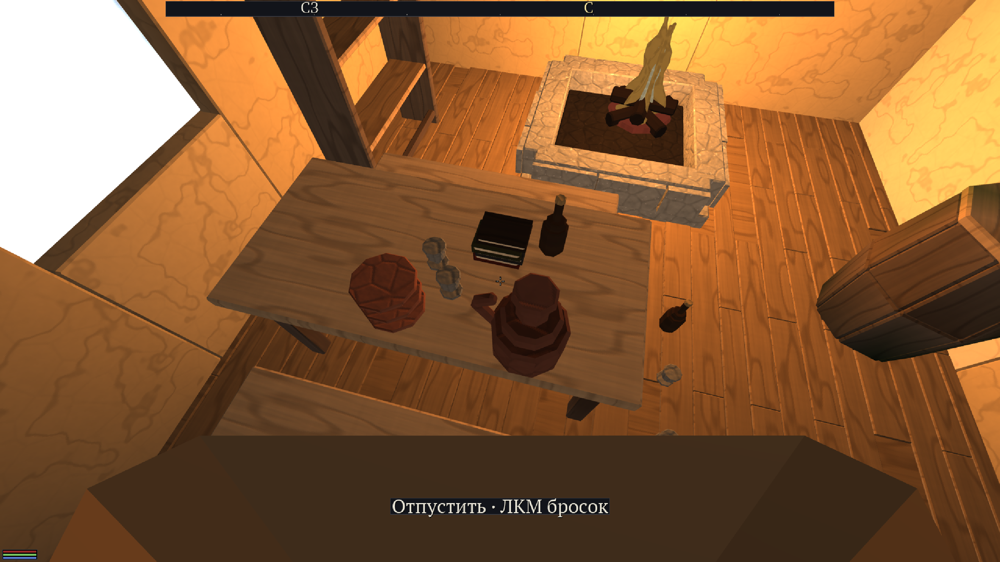
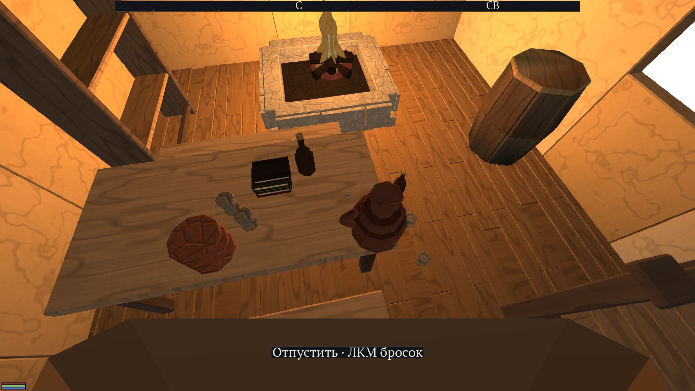
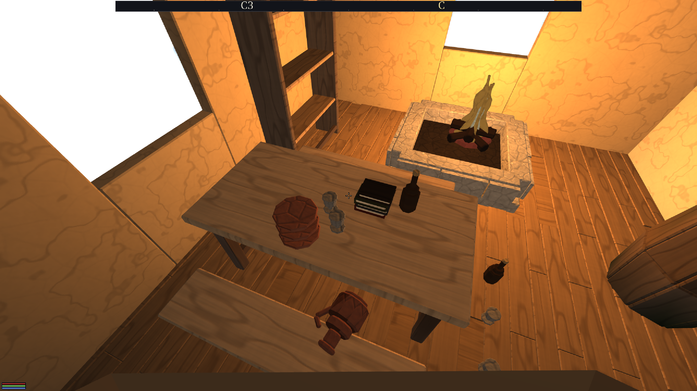
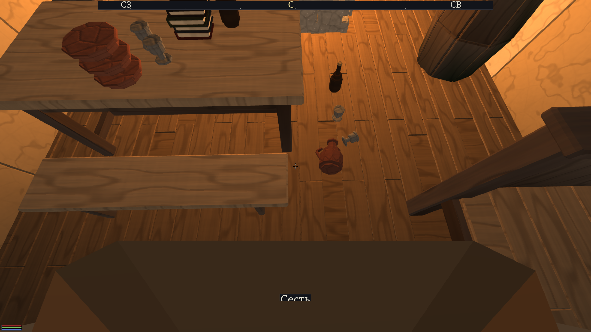
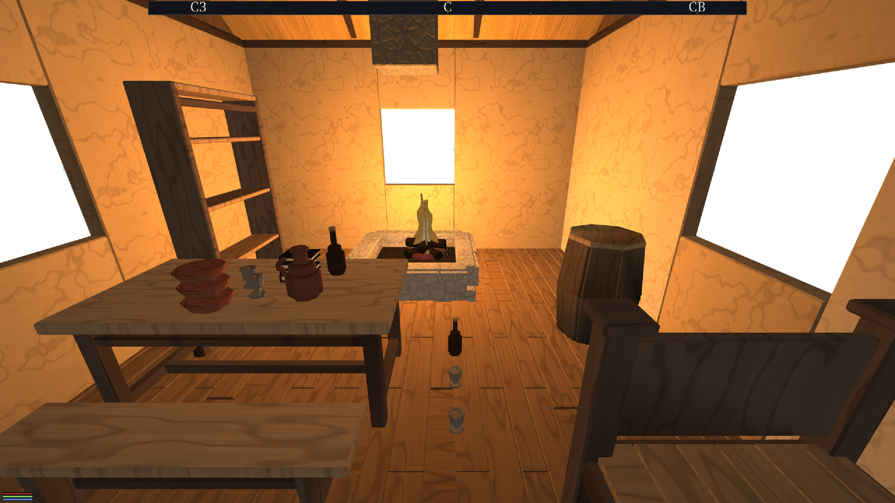
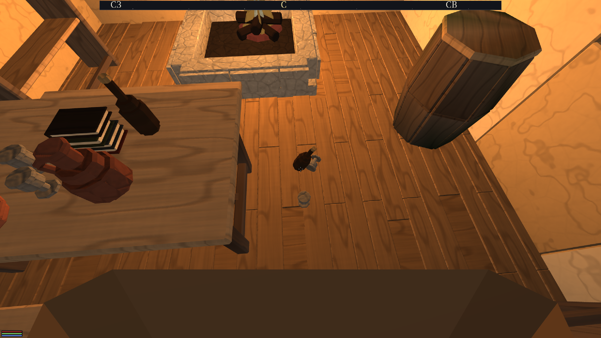

Волна big-grab · 28.08.2026 · сборка build_grab (RelWithDebInfo, Homebrew clang) ·
дерево на d57332d
«Всем объектам в мире надо задать физические свойства; хочу как в Скайриме — зажав E, поднимать объекты, держать, складывать друг на друга и прочее.»
«Моё тело тоже имеет физические свойства — хочу всякие банки, бутылки, еду толкать, двигать, если она не закреплена; толкать и двигать другими объектами, когда у меня в руках что-то есть.»— заказ владельца 28.08
| Что | Где | Одной фразой |
|---|---|---|
| Динамическое тело | engine/platform/physics |
Контракт IPhysics знал ровно два рода тел — статичное и кинематическую капсулу; предмет, который падает, ни одним из них не выражается. |
| Вещество | engine/core/materials/sources/PhysicsSubstance.h |
Плотность, трение, упругость, тег поверхности, порог хрупкости — пять полей шестой оси материала. Тело называет вещество и не носит коэффициентов. |
| Масса предмета | engine/app/sources/PropPhysics.* |
Считается из собственных треугольников предмета и плотности вещества. Рукой не пишется нигде. |
| Рука | engine/app/sources/GrabDrive.* |
Порог удержания, пружина с потолком силы, выпадение, бросок — чистая арифметика, проверяемая без окна. |
| Предметы в мире | engine/app/sources/AppProps.cpp |
Тела по расстановкам локации, синхронизация тело→отрисовка, клавиша E, прицел, подсказка, прибор. |
| Третий слот отрисовки | engine/render/sources/RenderSystem.* |
Подвижный предмет — свой дро со своей матрицей; матрицу приносит физика. |
| Реестр физики предметов | assets/objects/furniture/PHYSICS.txt |
Класс тела, вещество, толщина стенки, заполнение — 35 строк. Массы в файле нет. |
В файл кладётся только то, чего неоткуда взять: «миска глиняная» — это факт о предмете. Всё остальное выводится:
масса = ОБЪЁМ ВЕЩЕСТВА × плотность вещества
объём вещества = ЗНАКОВЫЙ ОБЪЁМ меша (теорема о дивергенции) × ЗАПОЛНЕНИЕ,
а у полой вещи — min(ПОЛОВИНА площади × толщина стенки, объём)
Три подробности, и каждая куплена измерением, а не рассуждением:
Несшитая оболочка (плетёная корзина, плоский ковёр) называется вслух:
отношение «знаковый объём / габарит» вне полосы 0.02…1.02 печатает строку
[предмет] furn-rug: оболочка не сшита… и уводит массу на габарит с
заполнением 0.08. Молчание здесь и есть тот самый мир двухсоткилограммовых сундуков.
Подвижный предмет выходит из общего статичного коллайдера. До этой волны коллайдер локации был одним телом на всю комнату, и кувшин, влитый в него, был неподвижной частью дома: его нельзя ни поднять, ни столкнуть, а поднятый рисунок остался бы висеть на месте — вершины запечены в мировых координатах. Теперь у него своё тело (выпуклая оболочка собственных вершин, до 192 точек) и свой дро с матрицей.
Тела рождаются спящими. Это лечит классический отказ Скайрима «предметы разлетаются при входе в помещение» и стоит ровно ноль: спящая комната не платит ни одного тика симуляции (§5).
Держимый предмет остаётся полноценным динамическим телом, которому раз в тик
пишется скорость к точке перед камерой, с потолком ускорения сила / масса.
Отсюда даром получается всё, что узнаётся с первого касания: заклинивание в углу,
дрожь на пределе, вырывание, и «предмет в руках толкает другие». Кинематическое тело
проходит сквозь стены или двигает их бесконечной силой — ощущение теряется целиком.
| Ручка | Значение | Откуда число |
|---|---|---|
| порог удержания | 0.25 с | больше самого медленного щелчка (0.08–0.12 с), меньше времени, за которое рука устаёт ждать |
| радиус прицела | 1.6 м | та же школа, что у двери (1.2) и мебели (1.2); утварь мелкая, и целятся в неё сверху вниз |
| предмет перед глазом | 0.90 м, на 0.15 ниже луча | вытянутая рука; висящий в перекрестье предмет закрывает то, куда идёшь |
| пружина выбирает расстояние за | 0.08 с | жёсткость в единицах, проверяемых секундомером: пять кадров |
| потолок скорости ведения | 6 м/с | иначе тело за тик проходит больше своей толщины и уходит сквозь стену |
| потолок силы ХВАТА | 350 Н | 35 кг, поднятые с 1g: кувшин летит к руке, мешок зерна (46 кг) ползёт, сундук не трогается |
| выпадает, отстав на | 0.80 м дольше 0.35 с | отставание на быстром развороте измерено в 0.25–0.35 м |
| потолок силы ТОЛЧКА ТЕЛОМ | 8 Н | §4.6 — измерен, а не выбран |
Потолков два, и они разные. Сила хвата (сколько человек
поднимает руками) и сила толчка телом (сколько он расталкивает на ходу) — разные
вопросы. Одна ручка на оба сделала бы «не могу поднять шкаф» и «не могу отпихнуть шкаф
ногой» одной фразой. Это же требование пришло из разбора Скайрима: у них публично
подтверждён ровно один параметр — fMoveLimitMass, и он про второе.
Отдельной механики стеков нет и не должно быть: если сон, трение и пружина сделаны верно, стопки получаются сами. Что для этого понадобилось назвать:
PhysicsSubstance.h, и оно
вычитано из исходника Jolt, а не вспомнено: трение — среднее геометрическое
sqrt(f₁·f₂), упругость — max(r₁,r₂)
(ContactConstraintManager.h:501-502). Координатор передавал «среднее»; среднее
там геометрическое, а у упругости правило вообще другое.Волна «сидеть и лежать» и эта волна делят одну клавишу. Договор (её формулировка,
исполнено дословно): за PlayerState::interact_pressed остаётся смысл
«короткое нажатие случилось», а распознавание короткого и долгого кладёт зона
предметов. Ни строки чужого кода не изменено.
клавиша нажата, защёлка взведена → защёлка СНИМАЕТСЯ на хранение удержание набрало 0.25 с → ВЗЯТЬ (долгое — наше) клавиша отпущена, порог не набран → защёлка ВОЗВРАЩАЕТСЯ (короткое — их) нажатие и отпускание внутри тика → до нас не доходит вовсе: защёлка цела
Две ловушки, названные их волной, и что с ними сделано:
IInput::is_down),
а не на защёлке: защёлку гасит park_posture, пока человек в позе, и у сидящего
долгое нажатие съедалось бы выходом из позы.Порядок в тике: grab_input(dt) стоит до park_posture и
pre_step — короткое нажатие возвращается защёлкой, которую они читают ниже по
тому же тику, поэтому дверь открывается без задержки, видимой глазом.
Все числа ниже — вывод рукавов sim_loose_props и app_prop_physics
и беспилотных прогонов игры. Каждая приёмка опубликована вместе со случаем, который она
обязана отвергнуть (правило 30).
| Мера | Замер | Контроль (обязан провалиться) |
|---|---|---|
| пять предметов друг на друге уснули через | 0.48 с | — |
| дрейф за 10 с после засыпания | 0.000000 м | та же стопка с проникновением 2 см уехала на 0.0063 м — замер различает |
Порог «не шевелится ни на пиксель» взят как 0.1 мм: пиксель FullHD с метра — около 0.5 мм.
Двенадцать предметов, десять подъёмов, две секунды симуляции каждый: расхождение поз < 1·10⁻⁵ м, и все двенадцать спят, ни разу не проснувшись.
| Один и тот же приказ руки, 0.5 с | осталось до цели |
|---|---|
| кувшин 2.1 кг | 0.004 м |
| мешок 46 кг | 0.183 м (в 46 раз больше) |
Никакой таблицы «классов веса» для этого не нужно: потолок силы против разной массы даёт разный исход сам.
Рука зовёт кувшин за стену: он выпадает через 0.33 с и остаётся на
x = 0.295 при стене на x = 0.4…0.6 — сквозь стену
не прошёл и игрока за собой не потянул. Контроль: та же рука без стены —
предмет доходит (остаток 0.05 м) и не выпадает.
Кувшин, ведомый рукой, проносится сквозь кубок: кубок уехал на 0.840 м. Контроль — тот же кадр без ведения: 0.000 м.
Честно о том, чего кадром не предъявлено. Шаг «смахнуть кувшином кубки со стола» в живой игре дал ровно 0.000 м трижды, и причина измерена, а не додумана: до кубка на середине стола рука не достаёт (несёт предмет в 0.90 м перед глазом, а до середины 1.40, и ближе стол не пускает), до кубка на полу — тем более (глаз выше пола на 1.7 м), а прицел «прямо в кубок» опускает предмет на 0.15 м, то есть ведёт его в столешницу. Это верное поведение, а не дефект: смахнуть можно то, до чего дотягиваешься. Само свойство доказано числами с контролем выше; живым кадром волна предъявляет толчок телом, где расстояний хватает.
| Проход капсулы, 2 с | смещение |
|---|---|
| бутыль 0.5 кг | 1.981 м |
| бочка 200 кг | 0.000 м |
Потолок силы толчка измерен, а не выбран. Умолчание Jolt — 100 Н, и при нём
полукилограммовый кубок, задетый на ходу, улетал на 4.8–6.6 м: человек не задевал посуду, а
пинал её. 30 Н дали ровно то же (5.8 м) — то есть дело было не в «чуть поменьше».
На 8 Н живой прогон даёт 0.75 м у кубка и 0.018 м у бутыли: посуда отъезжает на шаг
и остаётся стоять. Число читают двое — spawn_player и рукав приёмки, — и
именно поэтому оно константа PLAYER_PUSH_FORCE_N, а не литерал в двух местах.
Беспилотный прогон (DFN_GRAB_LAB=1 DFN_GRAB_PROBE=furn-jug) на боевой карте
Вайтрана, локация int/whiterun/x102z124. Рука жмёт клавишу, а не зовёт
механику: прямой вызов мерил бы половину пути — мимо прицела, мимо порога удержания, мимо
подсказки.



y = −999.077 при столешнице −999.070, тело спит. Остальные
семь предметов — на своих местах и тоже спят.


Два плеча, и второе важнее: комната, где никто ничего не трогал (так живёт мир), и комната, разбуженная целиком (так она выглядит в худшую секунду).
| тел | спят, мкс/тик | разбужены, мкс/тик | доля кадра 16.7 мс |
|---|---|---|---|
| 0 | 0.6 | 0.6 | 0.00 % |
| 10 | 0.6 | 7.0 | 0.04 % |
| 30 | 0.6 | 8.2 | 0.05 % |
| 60 | 0.6 | 9.9 | 0.06 % |
| 120 | 0.6 | 11.4 | 0.07 % |
Живой кадр (Вайтран, локация x102z124, DFN_VSYNC=0, 1500 кадров):
| доза | подвижных тел | кадр, мс | худший, мс |
|---|---|---|---|
DFN_PROPS=0 | нет | 4.109 | 4.747 |
DFN_PROPS=1 | 11 | 4.289 | 15.741 |
DFN_PROPS=1 | 41 | 4.186 | 7.693 |
DFN_PROPS=1 | 71 | 4.164 | 4.608 |
DFN_PROPS=1 | 131 | 4.302 | 5.625 |
Ответ на вопрос волны: локация с тридцатью предметами не просела — разница 4.186 против 4.109 мс лежит внутри разброса между прогонами (11 тел дали 4.289, то есть больше, чем 71). Честная формулировка: до 131 спящего тела вклад в кадр неотличим от шума, а стоимость разбуженной комнаты — сотые доли процента кадра.
Ни одно из этих чисел не написано рукой: все они — геометрия предмета × плотность вещества. Контрольная рука на трёх предметах с известным ответом (стул ≈ 5 кг, сундук 15–25, стол 25–40, полоса ±50 %):
| предмет | по оболочке (отвергается) | по правилу зоны | ждём |
|---|---|---|---|
| furn-chair | 99.5 кг | 5.23 кг | 2.5…7.5 |
| furn-chest | 217.6 кг | 29.6 кг | 7.5…37.5 |
| furn-table | 648.0 кг | 41.1 кг | 12.5…60 |
| предмет | вещество | объём, м³ | масса, кг | что это значит в руках |
|---|---|---|---|---|
| furn-cup | олово, стенка 2 мм | 0.0005 | 0.46 | летит к руке; бросок упирается в потолок 8 м/с |
| furn-bottle | стекло, 3 мм | 0.0018 | 0.45 | то же |
| furn-bowl | глина, 4 мм | 0.0023 | 1.04 | стопка из трёх — приёмка стека |
| furn-basket | лоза, 6 мм | 0.0576 | 1.12 | лёгкая, как и положено плетёнке |
| furn-jug | глина, 7 мм | 0.0053 | 1.94 | подопытный кадров §4.7 |
| furn-candlestick | латунь, 2 мм | 0.0015 | 1.66 | — |
| furn-books | бумага | 0.0048 | 3.84 | стопка из четырёх |
| furn-stool | сосна, заполн. 0.5 | 0.0102 | 2.54 | табурет носится, лавка — нет (лавка сиденье позы) |
| furn-cheese / ham | сыр / мясо | 0.007 / 0.011 | 7.31 / 11.06 | тяжело, но носится |
| furn-sack | зерно | 0.061 | 45.7 | тащится, не поднимается — вес виден |
Полный вывод — ctest -R app_prop_physics (печатает все 35 строк).
27 записей в engine/core/materials/sources/PhysicsSubstance.h, каждая — пять
полей оси 6. Сливается с реестром материалов волны big-matcore — договор координатора
28.08: до тех пор здесь минимальный набор и интерфейс «по имени вещества → физсвойства».
солома 120 · лоза 200 · тесто 250 · ткань 300 · овощи 400 · сосна 500 · береста 600 берёза 650 · дуб 700 · зерно 750 · бумага 800 · кожа 900 · воск 950 · мясо 1000 пергамент 1000 · сыр 1050 · штукатурка 1200 · кирпич 1800 · кость 1900 · глина 2000 стекло 2500 · известняк 2600 · гранит 2650 · олово 7300 · железо 7870 · латунь 8500
Нулевая запись — default (1000, трение 0.2, упругость 0) — это умолчания
Jolt: мир, в котором ни одно вещество не названо, ведёт себя бит в бит как вчера.
Разрешено координатором (правило 26). Названо явно: всё добавление, ни одна
существующая сигнатура и ни одна семантика не тронуты, реализаций три (Jolt, null и двойник
PlayerMovementTests) — обновлены все.
| Вызов / поле | Зачем |
|---|---|
DynamicBodyDesc + create_dynamic_body() | тело с массой, трением и сном; форма — выпуклая оболочка вершин предмета |
BodyPose + body_pose() | откуда рисовать; поза ЛЮБОГО тела, не только динамического |
body_velocity() / set_body_velocity() | пружина хвата и бросок |
set_body_gravity_factor() | вес снимается на время ношения (иначе он выражался бы дважды) |
body_asleep() / activate_body() | сон — предмет приёмки, а не деталь реализации |
CharacterDesc::push_force_n | второй потолок: сколько человек расталкивает телом |
substance у динамического, статичного и террейн-тел | тело называет вещество; коэффициенты — у вещества |
Поправка на ходу, и её стоит записать. Первая редакция положила
friction и restitution полями дескриптора тела. Координатор
остановил это пока потребитель один: «вещество как свойство вызова» — дословно та
ошибка, которую свод уже осудил на DrawParams.roughness. Разница не
косметическая: у вызова нет владельца, которому задать вопрос «почему у дуба здесь 0.5, а
через файл 0.4», и два места разойдутся молча.
| Дверь | Что делает |
|---|---|
DFN_PROPS | ДОЗА. 0 — ни одного динамического тела: предметы едут в потоки построек и в общий коллайдер, как ехали, клавиша E прежняя. Отрицательное плечо правила 30. |
DFN_GRAB_PROBE | беспилотная рука: furn-jug — взять/пронести/поставить/бросить; push — пройти сквозь ряд посуды. Кадры в docs/acceptance/. |
DFN_GRAB_LAB | накрытый стол приёмки (число — сколько ещё предметов поставить сеткой на пол, для бюджета). Нужна потому, что боевые карты сегодня не ставят в комнаты ни одного подвижного предмета реестра: вся утварь рисуется чертежами .dfh по месту, а из реестра стоит одна кровать. Уйдёт, когда расстановка убранства положит утварь сама. |
| Рукав | Что держит |
|---|---|
sim_loose_props | девять случаев на НАСТОЯЩЕМ Jolt и настоящей арифметике хвата (GrabDrive.cpp линкуется, а не копируется): падение и сон, стопка, повторяемость подъёма, толчок предметом, вес, выпадение, толчок телом, короткое/долгое нажатие, бросок, бюджет. |
app_prop_physics | арифметика массы без окна и без физики: замкнутый куб наизусть, отвергаемый двухсоткилограммовый сундук, несшитая оболочка с контролем, контрольная рука на трёх предметах, вся полка в полосе. |
app_doors | три новые двери в таблице, читаются ровно из AppProps.cpp (рукав ловит дверь, которую никто не читает). |
App::loose_props_ несёт имя предмета, тело и массу, а поза берётся у физики
одним вызовом body_pose().brittle_kj_m2 у вещества объявлено и не
используется: «глиняная миска бьётся, глиняная стена нет», то есть решает вещество ×
масштаб × роль, и роли у предмета пока нет.fixed. У первых четырёх точка позы волны «сидеть и лежать»
(уехавшая из-под сидящего лавка — дефект, а не физика), котёл стоит над огнём, который
отдельный предмет. Ровно эту границу проводит Skyrim: мебель статична, утварь — клаттер.